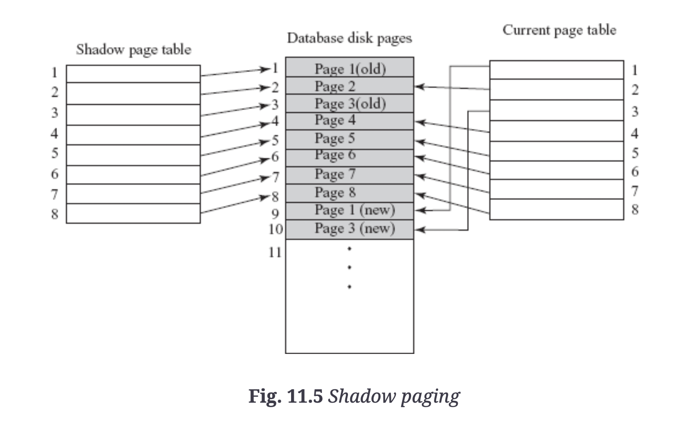

The recovery manager of a dbms performs recovery operations.
Transaction and system crash failures are non-catastrophic as no non-volatile storage is lost.
Logical error: transactions fail due to logical error, eg. incorrect input, integer overflow, etc.
System error: An undesirable system state, eg. deadlock, incorrect synchronization, etc. can stop normal execution
Computer failure (system crash): hardware failure. Assumed to not affect contents of non-volatile storage media eg. disks (fail-stop assumption).
Disk/Media failure: loss of data in some disk blocks due to disk read/write crash, power disruption
Physical problems and environment disasters: theft, fire, sabotage, floods, earthquakes, etc.
When transactions update database, disk pages/blocks containing data items are cached into main memory/buffer and modified there before being written back to disk. Cache directory is maintained to keep track of data items present in buffers.
DBMS recovery terminology uses some terms to specify when modified page can be written back to database on disk. A steal/no-force approach is most desirable as it provides most freedom to cache manager when selecting replacement pages and scheduling writes.
When DBMS restarted after crash, control given to recovery manager which must bring database to consistent state. In order to succeed, recovery manager maintains system log of all modifications to database and stores on stable storage guaranteed to survive failures, eg. by storing on several non-volatile storage devices.
Work involved in recovery depends on number of changes made my committed transactions that haven’t written to disk. DBMS periodically force-writes all modified buffer pages during normal execution.
Sequence of log records containing essential data for each transaction:
[T_i, start] indicates a
transaction as started[T_i, X, V_o, V_n]
indicates that transaction performed update on X having old value and
new value
[T_i, X] - only required
to determine necessity of cascading rollback. In practice, cascading
rollback is entirely avoided and read operations not required.[T_i, commit][T_i, abort]Write-ahead logging: necessary to force-write all log records to stable storage prior to making changes to database
Log-record buffering: log records are typically collected in the log buffer and copied to stable storage at once rather than individually.
When system restarts post-failure, log is scanned to determine transactions that must be redone, undone.
Checkpoints: periodically written into the log to reduce recovery time. Transactions committed before checkpoint time do not need to be considered during recovery process – reduces work required during recovery. When a checkpoint is taken:
fuzzy checkpointing writes checkpoint before buffer blocks – allows transactions to run during potentially long buffer block writing, although record of prior checkpoint must be maintained
Two primary techniques: log-based recovery techniques and shadow paging.
maintains transaction logs to keep track of update operations.
undo and redo are applied with help of log on last consistent state of database. Undo reverses changes made by uncommitted transaction, while redo reapples changes of committed transaction.
There are two types of updating techniques:
before image and after image maintained on disk. Does not require log when only one transaction active at a time.
Shadow paging considers database to be made of fixed-size units called pages, mapped to physical blocks of storage by using page table.
knitr::include_graphics("imgs/shadowpaging.png")
Disadvantages:
Regardless of transaction #, a single log is maintained. IN general, higher concurrency means lengthier recovery.
Active list/commit list: lists of active transactions and committed transactions since last checkpoint.
Algorithm for Recovery and Isolation Exploiting Semantics (ARIES) is a widely used recovery algorithm using a steal/no-force approach (aka UNDO/REDO technique). Three main principles:
Log records are assigned a unique id called log sequence number (LSN), indicating address of log record on disk.
Transaction table and dirty page table contain record for each active transaction and each dirty page in the buffer, respectively. They both store the LSN of the most recent log record for the transaction/dirty page – for dirty page, this LSN is the earliest log record that might have to be redone for the page.
Compensation log record (CLR) maintains records actions taken during rollback of an update operation. Maintains UndoNextLSN containing LSN of log record that must next be undone.
Log tail: the most recent portion of log, written to main memory. Periodically force-written to SS, and records updating pages, committing transactions, aborting transactions, undoing updates, and ending transactions.
Checkpoints are maintained by writing a begin_checkpoint and end_checkpoint record in the log. LSN of begin_checkpoint is written to file accessed during recovery to find last checkpoint info. when end_checkpoint records are written, contents of transaction/dirty page table appended to the end of the log.
Analysis Phase
Redo phase: reapplies updates from log to database.
Undo phase: rolls back all uncommitted transactions
The main technique to handle catastrophic failures is database backup/dump – the entire contents of database are copied onto cheap storage materials.
To execute database backup:
Similar to steps used for checkpoints – also similar fuzzy dump process used.
System log smaller than db, so backup of log records done more often than full database backup. System log restores transactions since last backup.
Environmental disasters: Backup of db taken onto SS at a remote site used to recover lost data: remote backup.
Recovery of a system from catastrophic failures